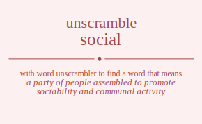

The word found after unscrambling social means that a party of people assembled to promote sociability and communal activity, relating to human society and its members, living together or enjoying life in communities or organized groups, relating to or belonging to or characteristic of high society, composed of sociable people or formed for the purpose of sociability, tending to move or live together in groups or colonies of the same kind, marked by friendly companionship with others, .
